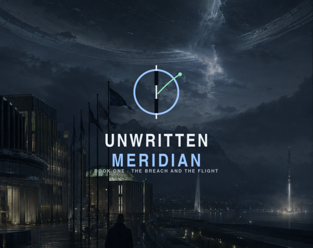

Unwritten Meridian — Book One is live.
Book One reached itch.io after a long stretch of work on branching choices, persistent state, consequences, save slots, mobile readability and endings. Releasing it gave me a much clearer understanding of the difference between getting a story playable and preparing it for actual players.
Play the release on itch.io ↗